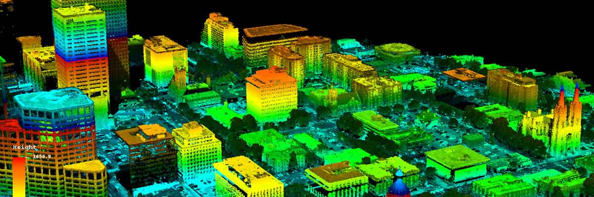
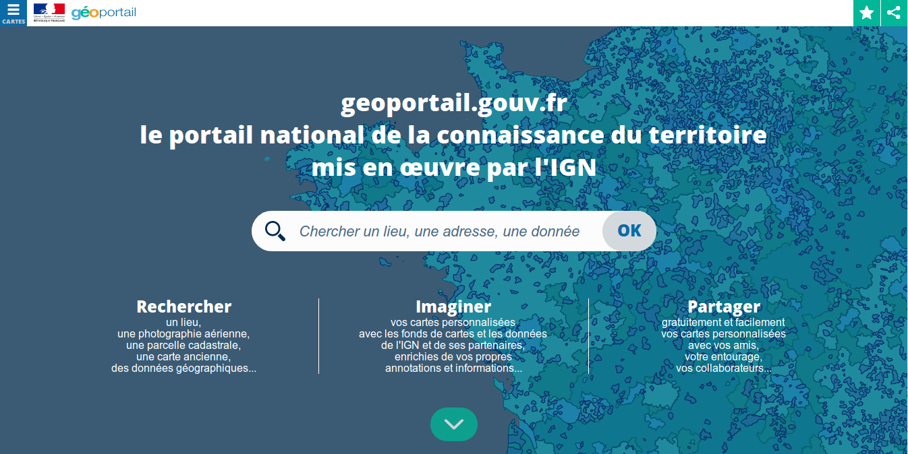

Information géographique
Définition, méthodes d’acquisition et formats
2025-10-15
Niveau géométrique
Le niveau géométrique d’un objet géographique correspond à sa forme et sa localisation sur la surface terrestre, exprimés dans un système de coordonnées explicite.
Niveau géométrique
Pour stocker, manipuler, analyser et représenter de l’information géographique, on distingue généralement 2 types de données : le raster et le vecteur.
Le raster
Une donnée raster est une image (plan scanné, photographie aérienne, image satellitaire…) localisée dans l’espace.
L’information géographique est alors stockée dans des cellules (pixel) contiguës généralement carrées.
Chaque pixel est défini par une résolution et possède des valeurs qui peuvent être traitées et cartographiées.
La manipulation des rasters nécessite des méthodes et des outils spécialisés.
Niveau géométrique
Pour stocker, manipuler, analyser et représenter de l’information géographique, on distingue généralement 2 types de données : le raster et le vecteur.
Le vecteur
Le format vectoriel utilise le concept d’objets géométriques (points, lignes, polygones) pour représenter (et stocker) des objets géographiques.
Les objets vectoriels ne ne pixellisent pas. On parlera néanmoins de niveaux de généralisation pour qualifier leur niveau de précision (parfois aussi appelée résolution).
Leur manipulation est simple et permet de puissants traitements.
Vecteur

Niveau géométrique : raster vs vecteur

Niveau topologique
Le niveau topologique d’un objet géographique se déduit du niveau géométrique. Il correspond aux relations éventuelles avec d’autres objets ou phénomènes (ex : contiguïté entre deux bâtiments).

Niveau sémantique
Il s’agit de l’ensemble des informations relatives à un objet géographique, qui le décrivent et le caractérisent. Elles sont souvent nommées données attributaires. Le niveau sémantique n’est pas fixe et se décline en une multitude d’informations
Niveau sémantique
Il s’agit de l’ensemble des informations relatives à un objet géographique, qui le décrivent et le caractérisent. Elles sont souvent nommées données attributaires. Le niveau sémantique n’est pas fixe et se décline en une multitude d’informations.
Les outils : Logiciels d’analyse de données
Les logiciels d’analyse de données (R, SAS, SPSS, etc.) permettent de traiter, explorer et analyser les données disposant d’une dimension géographique, grâce à du code et des fonctions.

Le logiciel R
Les outils : Logiciels de cartographie thématique
Bien que les SIG permettent la réalisation de représentations cartographiques, il ne s’agit pas de leur principale fonctionnalité et réaliser une carte peut s’avérer fastidieux… Si l’on souhaite rapidement réaliser une carte qui respecte l’ensemble des règles de la cartographie, il est plus simple d’utiliser un logiciel spécialisé.

Le logiciel Magrit
Relevés de terrain
Le levé topographique avec théodolite permet de relever précisément l’étendue et la topographie d’un territoire.
Le relevé de point GPS permet de collecter la localisation précise d’objet dans l’espace.
Télédétection (image satellite)
La télédétection comprend l’ensemble des procédés et techniques qui permettent d’acquérir à distance des informations sur les objets terrestres, en utilisant les propriétés des ondes électromagnétiques émises ou réfléchies par ces objets. La collecte de données de télédétection est réalisée par des avions ou par des satellites.
Les informations géographiques collectées par télédétection sont stockées en format RASTER. Le traitement de ce genre de données nécessite l’utilisation de logiciels spécialisés (Envi, Erdas, Idrisi…)..
Photogrammétrie (photo aérienne) et LiDAR
Ces deux technologies permettent de déterminer la forme, les dimensions, la position dans l’espace d’un objet. Elles sont très utilisées pour les relevés topographiques, mais aussi pour de nombreuses autres applications.

La photogrammétrie est une technologie passive. Elle est basée sur des images transformées de la 2D en modèles cartométriques 3D. Elle utilise le même principe que les yeux humains pour établir une perception de profondeur. La limitation de la photogrammétrie est qu’elle ne peut générer que des points basés sur ce que le capteur de la caméra peut voir.
Lidar (Light Detection and Ranging) est une technologie basée sur des faisceaux laser. Il tire au laser et mesure le temps qu’il faut pour que la lumière revienne afin d’en déduire une distance / profondeur. C’est ce qu’on appelle un capteur actif car il émet sa source d’énergie plutôt que de détecter l’énergie émise par les objets au sol.
Digitalisation
La digitalisation consiste à numériser des points à partir d’un support visuel, c’est à dire à attribuer à chaque point des coordonnées X et Y dans un système quelconque. Cela revient le plus souvent à créer des objets géographiques vectoriels à partir d’information géographique en mode RASTER (ex : photo aérienne).
Les recensements et enquêtes
Les recensements de population et les enquêtes contiennent la plupart du temps une dimension géographique. (ex : département de naissance, commune d’habitation, pays d’émigration…). Elles sont d’ailleurs généralement diffusées par entités (objets) géographiques (IRIS, commune, département, région…).
Les données issues de recensements et d’enquêtes sont le plus souvent des données attributaires d’objets géographiques !
Cette carte représente des données issues du RGP 2006 et fournies à l’échelle des communes françaises.
Il suffit de les mettre en relation avec les polygones des limites communales françaises pour les transformer en données attributaires d’objets géographiques.
Et… le Geoweb !
Le mot Geoweb désigne le mélange du Web 2.0 (ou web participatif) avec tout ce qui est lié à l’information géographique.
Les SIG grand public (ex : OpenStreetMap), les bases de données participatives ayant une dimension géographique (ex : Leboncoin) et les applications utilisant la géolocalisation (ex : Twitter) sont des outils du Geoweb.
Géocodage
De nombreux outils de géocodage sont utilisables gratuitement sur le Web. Ces outils reposent sur une base de données d’adresse géoréférencées et déterminent une localisation géographique précise en latitude/longitude. Ex : Le géocodeur datagouv.fr

Numérisation / Digitalisation
Les SIG ont toujours permis de digitaliser de l’information géographique. Mais aujourd’hui, des outils grand public sont apparus et permettent la digitalisation de données sans avoir de connaissances approfondies en SIG.
Numérisation / Digitalisation
Par exemple, uMap est un logiciel libre grand public qui permet de positionner aisément des informations sur une carte et des les partager.
Exemple d’organisation de vacances collectives via uMap
Données publiques
La donnée publique couvre l’ensemble des données qui sont ou devraient être (légalement ou volontairement) publiées ou tenues à disposition du public, et qui sont produites ou collectées par un État, une collectivité territoriale, un organe parapublic, dans le cadre de leurs activités de service public.
L’accessibilité de la donnée publique (qui implique aussi la liberté d’accès aux documents administratifs) est un des éléments de la transparence d’une gouvernance.
Cette information a d’autant plus de valeur pédagogique, historique, sociale, culturelle ou économique qu’elle est fiable, catégorisée, organisée, diffusée et réutilisable.
Des outils informatiques, parfois collaboratifs, permettent de mieux l’organiser et la valoriser dans la sphère du Web (ex : GéoCatalogue).

Open Data
Une donnée ouverte est une donnée numérique d’origine publique ou privée. Elle peut être produite par une collectivité, un service public (éventuellement délégué) ou une entreprise.
Elle est diffusée de manière structurée selon une méthodologie et une licence ouverte garantissant son libre accès et sa réutilisation par tous, sans restriction technique, juridique ou financière mais selon certains devoirs pour l’utilisateur.
L’ouverture des données (dit « Open Data ») représente à la fois un mouvement, une philosophie d’accès à l’information et une pratique de publication de données librement accessibles et exploitables.
Un mouvement (initié dans les années 1990 par des chercheurs) pour l’accès libre et gratuit aux données scientifiques. Il s’est élargi depuis au domaine des données publiques.

Les fournisseurs d’IG (en France)
Un incontournable : l’Institut Géographique National
Les organismes publics et les collectivités territoriales
Les fournisseurs d’IG (au niveau international)
L’IGN
L’Institut National de l’Information Géographique et Forestière assure la production, l’entretien et la diffusion de l’information géographique française de référence.
L’IGN met à disposition une masse de données géographiques très importante. Il propose par exemple des données complètes sur le réseau hydrographique, le réseau routier, la topographie ou les différents découpages administratifs et statistiques français, ainsi qu’un certain nombre de référentiels. L’IGN propose des données en format vectoriel et raster. Un portail permet également de visualiser toutes les données :

Organismes publics et collectivités territoriales
De nombreux instituts d’aménagement et d’urbanisme, observatoires, fédérations, agences spatiales et collectivités territoriales mettent à disposition de l’information géographiques. Dans le cadre d’une politique d’ouverture des données publiques, nombre de ces ressources sont centralisées sur des portails de diffusion.
Fournisseurs de données attributaires
De nombreuses sources fournissent des données/statistiques qui disposent de référentiels géographiques, qui peuvent facilement être mises en relation à des géométries de référence :
Institut national de la statistique et des études économiques (INSEE)
Les organismes publics et les collectivités territoriales.
Les plateformes collaboratives & coproduction de contenus, comme Wikipédia
L’INSEE
L’Institut National de la Statistique et des Etudes Economiques est chargée de la production, de l’analyse et de la publication des statistiques officielles en France. Il organise et exploite les recensements de la population, mène des enquêtes, mesure les principaux indicateurs… Il est LE producteur des données statistiques de référence en France.
L’INSEE encourage la diffusion large de ses productions et bases de données. Il autorise la réutilisation des données, y compris à des fins commerciales. Cette réutilisation est, selon les cas, soumise ou non à la signature d’une licence.
Beaucoup des indicateurs sont fournis par entités géographiques (IRIS, quartier, commune, département…) qu’il suffit d’associer aux fonds de carte géréférencés de l’IGN pour des usages cartographiques.

Questions centrales pour rechercher de l’IG
Quel est mon espace d’étude ? Monde ? Europe ? France ? Ile-de-France ? …
Quel est l’objet géographique sur lequel je travaille ? Pays ? Régions ? Communes ? Parcs naturels ? Rivières ? …
Quelle est la thématique que je souhaite explorer ? Environnement ? Démographie ? Transport? …
Quel est le format de données que je recherche ? Géométries ? Données statistiques à joindre à mes couches géographiques ?
Données conventionnelles ou non ?
Quelle période ?
D’un point de vue général, privilégiez l’usage de ressources gérées et maintenues par des institutions.
L’importance des métadonnées
Avec la massification des données mises à disposition, la documentation structurée des données est essentielle. Elle facilite l’accès au contenu informationnel d’une ressource informatique.
Une métadonnée est littéralement une donnée sur une donnée. C’est un ensemble structuré d’informations décrivant une ressource (pas spécifique à l’information géographique).
Les métadonnées synthétisent des informations élémentaires et facilitent la compréhension et l’utilisation des données : auteur, date de création/modification, technique de collecte, qualité, taille du fichier, unité de mesure, droits d’utilisation…
Consulter attentivement les métadonnées associées aux données géographiques est primordial.
Le shapefile
Son extension est classiquement .shp, mais il est toujours accompagné de deux autres fichiers de même nom, mais aux extensions suivantes :
D’autres fichiers peuvent être également fournis :
.sbn et .sbx : index spatial des formes.
.prj : information sur le système de coordonnées.
.shp.xml : métadonnées du shapefile.
Et bien d’autres encore : .sbn, .sbx, .fbn,.fbx, .cpg, .atx…
Données attributaires fournies par l’INSEE
L’INSEE et l’IGN utilisent des identifiants identiques pour qualifier les objets géographiques de référence du territoire français.
Dans les fichiers de données INSEE (à gauche) l’attribut qui sert d’identifiant unique pour les communes est nommé CODGEO (code INSEE des communes). La couche géographique des communes fournies par l’IGN (à droite), comportent le même identifiant unique nommé INSEE_COM
Atelier : quête géographique
Organisez-vous en groupe de deux et partez en quête d’informations géographiques ! Voici les couches géographiques à retrouver :
La dernière version “officielle” du découpage administratif du territoire français (IGN).
La liste des données en Open Data mises à disposition par l’ONF.
Extraire les parcs et jardins de Paris avec OpenStreetMap et l’API overpass-turbo.
Identifier les couches géographiques de couverture du sol mises à disposition pour les villes Européennes par l’institut Copernicus.
Indice : pensez à spécifier dans votre recherche des mots-clés relatifs :
Au format des données souhaité (shapefiles).
A la couverture géographique désirée (France).
A l’objet géographique recherché.
A la source de données désirée.
Atelier / Solution (2)
L’ONF répertorie les ressources géographiques utiles pour la gestion forestière. Il s’agit de données produites par l’ONF, mais pas exclusivement. Un bon réflexe consiste à regarder ce qui est aussi disponible du côté de l’IGN.
Atelier / Solution (3)
Il est au préalable important de définir la clé-valeur de l’objet OpenStreetMap désiré grâce au wiki OpenStreetMap. Ensuite d’effectuer la requête de l’objet désiré via l’API overpass-turbo.
Atelier / Solution (3)
On peut ensuite exporter les résultats qui répondent à cette requête.
Atelier / Solution (4)
L’institut Copernicus met à disposition des couches géographiques pour 788 villes européennes (en 2018) de couverture du sol. On peut retracer l’évolution des modifications d’occupation du sol entre 2006 et 2018. Il faut se créer un compte pour accéder aux données.